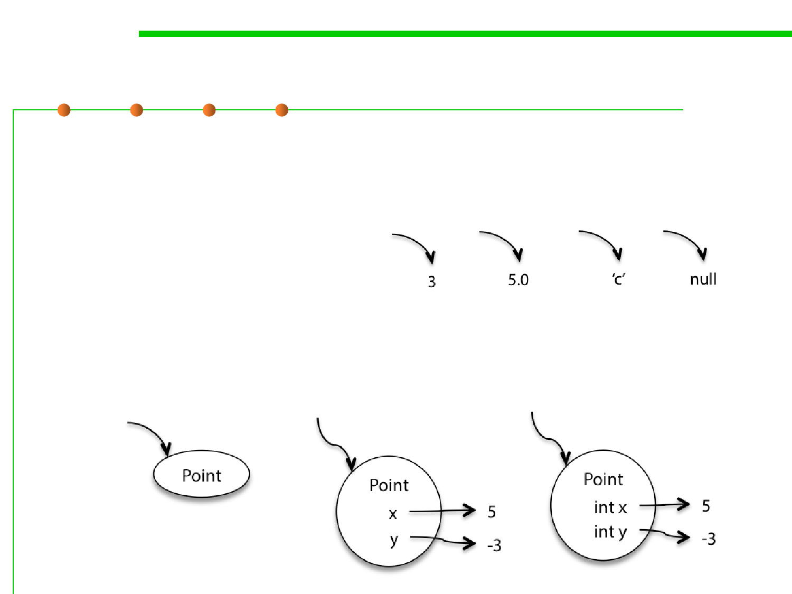

3.1 Data Type and Type Checking
Primitive and Object values in Snapshot Diagram
▪ Primitive values
– Primitive values are represented by bare constants. The incoming arrow is
a reference to the value from a variable or an object field.
▪ Object values
– An object value is a circle labeled by its type. When we want to show
more detail, we write field names inside it, with arrows pointing out to
their values. For still more detail, the fields can include their declared
types. Some people prefer to write x:int instead of int x , but both are
fine.